Urban Roots, a London-based urban farm, was seeking a solution to automate their pre-existing humidity control systems in their hoop houses. Initially, the project brief was to accurately measure indoor humidity levels and activate the temperature and humidity control system to increase winter crop yields. However, after a client meeting with Ben, our contact from Urban Roots, it was clarified that the main priority was to save on labour costs rather than increase crop yields. As a result, the refined objective was to develop a way to automatically and manually control the pre-existing hoop house lift-sides and fans to eliminate the need for manual attendance. This project also involves developing a way to connect the digital sensor and control system to their existing equipment, and potentially exploring the option of an internet-connected system.
The HoopNet control system lies at the heart of the project, as it addresses Urban Roots' primary requirement to automate their hoop houses. Its scalability makes it possible to duplicate all the components required for a single control box to as many hoop houses as needed by Urban Roots. The design comprises several components, including a custom circuit board that simplifies our design and minimizes space usage by including only the necessary pin slots for the parts.
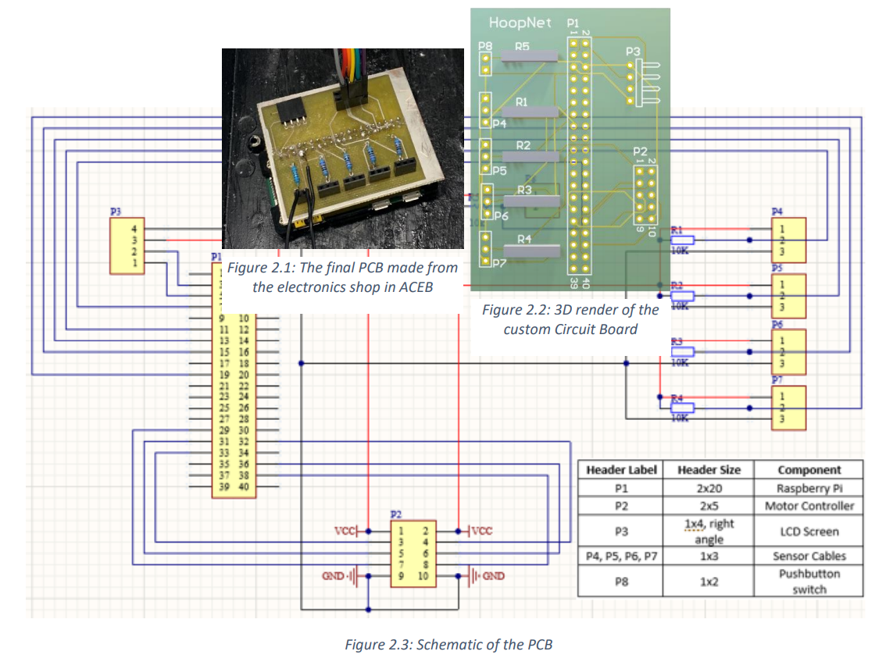
The HoopNet control system is the backbone of the project and the key to fulfilling Urban Roots' need for hoop house automation. To make the system scalable, we designed a custom circuit board that can be replicated for as many hoop houses as needed. We opted to use a Raspberry Pi Zero W as the controller due to its versatility and my familiarity with its coding language. With built-in Wi-Fi, we were able to develop smart plug code quickly without having to purchase a separate module or use Bluetooth. The motor controller serves as the main link between Urban Roots' current lift door system and the HoopNet control box, allowing anyone to control the high-powered motors. For accurate temperature and humidity readings, a compact sensor that can be spread around the hoop house was chosen, with each Raspberry Pi capable of supporting up to four sensors. By taking an average of the readings, we can ensure precise monitoring and control of the hoop house environment.
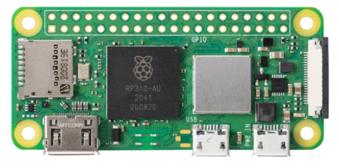
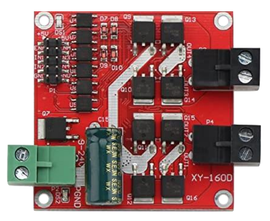
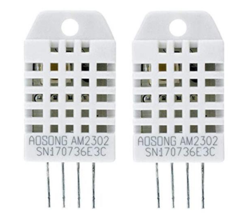
To allow Urban Roots to actively monitor temperature and humidity levels inside the hoop house, an LCD screen was added to display both values along with the device's general status, such as start-up or shutdown mode. Also incorporated is a manual override, available in both digital and physical modes. The physical override is activated by pressing a red button, switching the Pi into AUTO, OVERRIDE LOWER, or OVERRIDE RAISE modes. The digital override, which was not able to be implemented in a user-friendly website due to time constraints, can be activated through server commands. The entire design is contained within a compact box with a clear lid, which allows for easy visibility. The box was drilled with several holes to accommodate the button and any necessary wires that extend outside the casing.
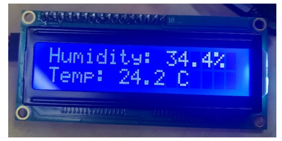
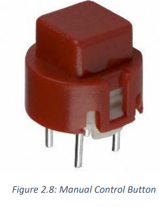
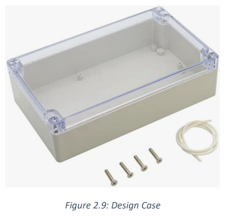
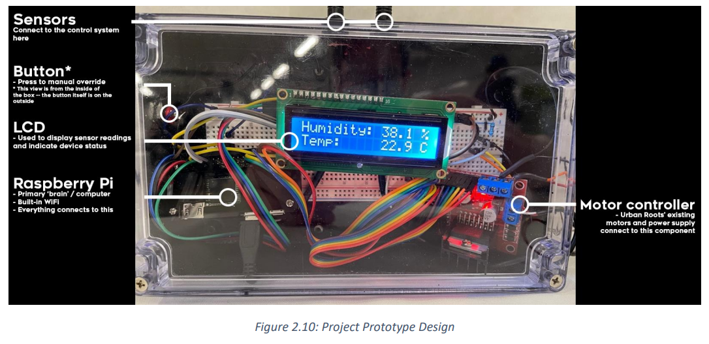
I planned to create a website with similar features to Home Assistant for Urban Roots. This website would have displayed temperature graphs, heat maps, and potentially a live video feed of the hoop houses, should we have added camera functionality. The website and related software would have been hosted on a physical computer on Urban Roots' property. This would have allowed them to control the sides of each hoop house from any device with an internet browser, using a secure VPN connection with encryption and login requirements to ensure only Urban Roots had access to the server's website.
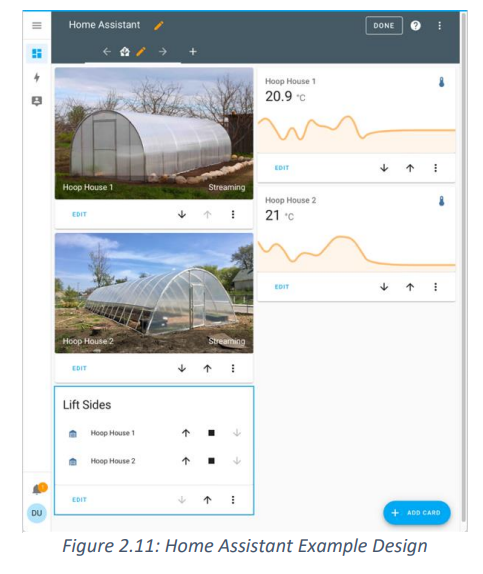
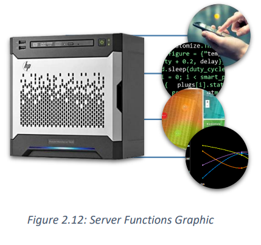
To make the design more user-friendly for Urban Roots' employees who have limited electronic/coding knowledge, we created a custom circuit board with plug-and-play headers to simplify the connection of components. Additionally, the team chose to use a Raspberry Pi microcontroller, which stores its code on a swappable SD card. This allows for easy data storage and backup in case of software failure or updates, enabling the clients to replace the storage module or store data elsewhere and "roll back" to the previous version.
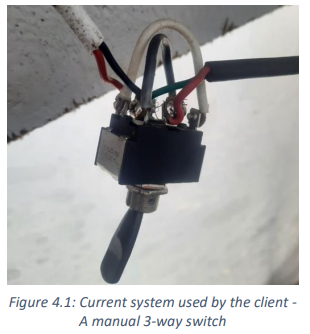
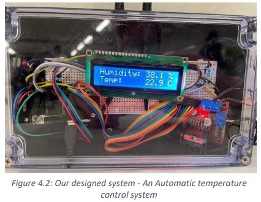
| Practicality Comparison | Our fully automated system saves Urban Roots from having to send a worker flick a switch. HoopNet’s control system achieves their needs while also maintaining the same manual control functionality that their existing system had. It’s a zero-compromises upgrade! In addition, the control box’s LCD display will provide immediate humidity and temperature readings, which would prevent them from needing to check the weather to know whether to open or close the hoop house |
| Practicality Comparison | The current design strengths lie in the amount of precision that the sides can be controlled with as it is a manual switch. But even so, our team’s design allows for far more precision as our motor control system is far more advanced than their current system of a simple switch, it lets us tell the motors exactly how they should behave depending on certain conditions. These conditions are accurately measured, with temperature and humidity readings based on an average of multiple points within the hoop house |
| Comparison of Weaknesses | Urban Roots’ current system has many exposed wires and solder joints (see Figure 4.1) which would eventually lead to corrosion in such a humid environment. HoopNet’s control box is more reliable as its components are all sealed – increasing its longevity in comparison to Urban Roots’ system. While HoopNet has more potential points of failure than the current system, we chose high-quality components and added the plug & play capability so that if a component were to fail, the component just needs to be plugged into the PCB. The only weakness that is impossible to avoid for both systems is their reliance on the electrical grid. Given the large 150W power draw of Urban Roots’ motors, rectifying this weakness would require an expensive and impractical battery backup system. |
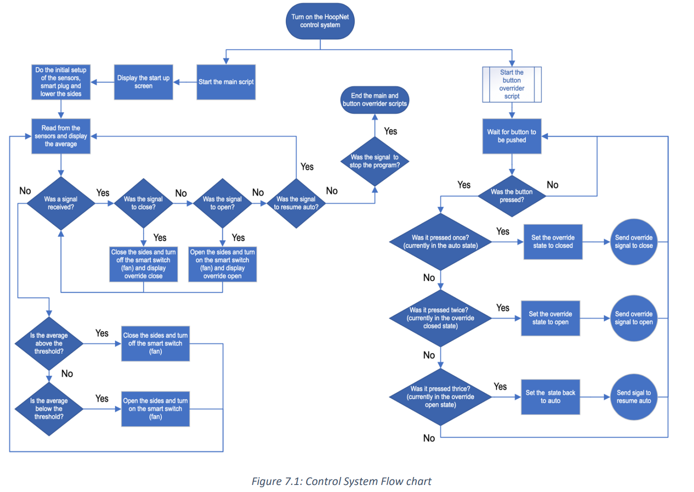
If you're interested in my skills and experience, please don't hesitate to get in touch with me via email or cell. I would be happy to answer any questions you may have about my work history or discuss potential employment opportunities. I am highly motivated, reliable, and always eager to learn new things, which I believe would make me a valuable addition to any team.
Toronto, Ontario
Canada, L4J 9K2